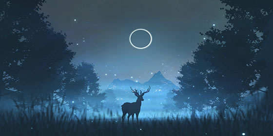
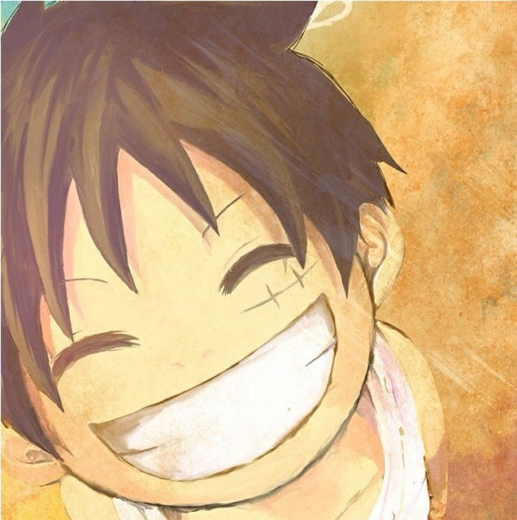

木子
或许是不知梦的缘故，流离之人追逐幻影。 —-江南
首页
文章
随笔
留言
MIUI
<<<<<<< HEAD
=======
>>>>>>> update
个人简历
我的小世界

个人信息

网名：木子
职业：web前端工程师
现居：黑龙江省哈尔滨市
爱好：小说、动漫、单车
邮箱：1018751483@qq.com
文章推荐
文章一:css中div垂直居中常用的几种方法总结
元素A中包含B元素，而且B元素有可能是一行文本、多行文本，图片（未知大小），如何让B元素在A元素中实现水平垂直居中效果
文章二:利用github搭建个人网站
为大家讲解一些怎么搭建属于自己的个人网站。首先，我们并不需要什么前端之类的基础，需要的只是你安静地把这篇教程看下去。当然如果你想要自己装饰自己的网站的话就得有一些前端基础了。
2020年4月
日
一
二
三
四
五
六
最新公告
网站上线！（附搭建教程）
2020-09-17
日历小控件制作教程
时钟小控件制作教程
js转义符总结